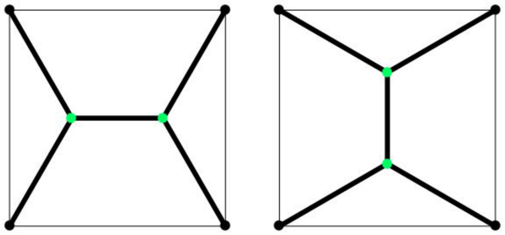
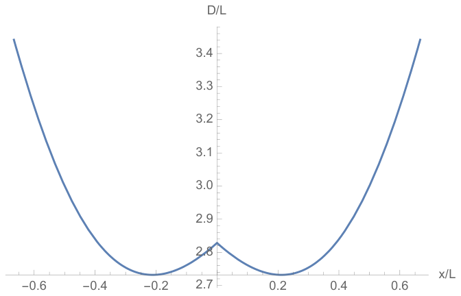

RMPh 풀이, 2021년 4월
각 도시 집합에 대해 고속도로망을 설계하기 전에, 모든 삼각형 배치에 적용되는 몇 가지 관찰을 할 수 있다. 평면 위의 두 점 $A$와 $O$ 사이의 최소 경로는 직선으로 주어지므로, 고속도로망은 직선과 교차점(intersection)만으로 이루어져야 한다. 둘째로, 모든 교차점에는 적어도 3개의 변(edge)이 들어오므로(교차점이 삼각형의 한 꼭짓점과 같은 퇴화된 경우에는 2개), 세 도시(이를 $A$, $B$, $C$로 나타낸다)를 잇는 고속도로망의 전체 길이를 최소화하려면 교차점이 하나보다 많아서는 안 된다.
대칭적인 배치는 정삼각형의 중심을 축으로 한 120도 회전과 중선 축에 대한 반사에 대해 불변인 배치이다. 교차점을 하나만 포함하는 그러한 대칭 배치는 단 하나뿐이다. 교차점은 삼각형의 중심에 있고, 고속도로망의 변들은 이 교차점을 삼각형의 꼭짓점들과 잇는다. 이 배치의 전체 길이는 $D=3(2/3)(\sqrt3L/2)=\sqrt3L$이다.
항등식을 증명하기 위해 $A$에서 $O$로 향하는 벡터를 $\vec d$, $A$에서 $O'$으로 향하는 벡터를 $\vec d'$이라 하자. 여기서 $\vec d'=\vec d+\vec\delta$이고 $d=\sqrt{\vec d\cdot\vec d}$이다. 그러면 벡터 $\vec d'$의 크기(norm)는
\[d'=d+\delta d=\sqrt{\vec d'\cdot\vec d'}=\sqrt{d^2+2\vec\delta\cdot\vec d+\delta^2}=d+\frac{\vec\delta\cdot\vec d}{d}+O(\delta^2)\,.\tag{1.1}\]로 주어진다. 따라서 $d\neq0$일 때
\[\delta d=\vec\delta\cdot\vec e+O(\delta^2)\,,\tag{1.2}\]이며, 여기서 $\vec e=\vec d/d$는 $A$에서 $O$를 향하는 단위 벡터이다. b) iii)을 위해 중요한 점은, 위의 식이 $d\neq0$인 한 성립한다는 것이다.
최소 길이 경로를 구하기 위해, 무한소 이동 벡터 $\vec\delta$에 대한 길이의 도함수가 0이 되는 교차점을 찾고자 한다. (1.2)를 이용하면, 교차점을 $\delta$만큼 이동시켰을 때 고속도로망의 전체 길이는
\[\delta D=\delta\cdot(\vec e_{OA}+\vec e_{OB}+\vec e_{OC})+O(\delta^2)\,,\tag{1.3}\]만큼 변한다. 여기서 $\vec e_{OA}$, $\vec e_{OB}$, $\vec e_{OC}$는 교차점 $O$에서 각각 $A$, $B$, $C$를 향하는 단위 벡터(원문: normal vectors)이다. 벡터 $\vec\delta$의 모든 방향에 대해 $\delta D$가 $\delta$의 최저차에서 0이 되기를 원하므로 $\vec e_{OA}+\vec e_{OB}+\vec e_{OC}=0$이다. 이로부터
\[(\vec e_{OA}+\vec e_{OB})^2=2+2\vec e_{OA}\cdot\vec e_{OB}=1\tag{1.4}\]이 되고, 이는 $\vec e_{OA}\cdot\vec e_{OB}=-1/2$, 따라서 $OA$와 $OB$ 사이의 각이 120도임을 뜻한다. 마찬가지로 같은 관계에서 출발하여 $OB$와 $OC$, $OC$와 $OA$ 사이의 각도 모두 120도임을 증명할 수 있다.
함께 고려해야 할 경계 경우(corner case)가 하나 있다. 식 (1.2)는 $d\neq0$인 한, 즉 점 $O$가 $A$, $B$, $C$ 중 하나와 같지 않은 한 성립한다. $O$가 $A$, $B$, $C$ 중 하나와 같을 때 그것이 최소 길이의 고속도로망이 아님을 확인해야 한다. 일반성을 잃지 않고 $O=A$라 하자. 그러면 $O$를 무한소 벡터 $\delta$만큼 이동시켰을 때 길이 변화는
\[\delta D=\delta+\vec\delta\cdot(\vec e_{AB}+\vec e_{AC})\tag{1.5}\]이다. $\vec\delta\cdot(\vec e_{AB}+\vec e_{AC})$의 최솟값은 $\vec\delta$가 $(\vec e_{AB}+\vec e_{AC})$와 반대 방향을 향할 때 얻어진다는 것에 주목할 수 있다. 그러한 벡터 $\vec\delta$에 대해 길이 변화는
\[\delta D=\delta(1-|\vec e_{AB}+\vec e_{AC}|)\,.\tag{1.6}\]가 된다. $AB$와 $AC$ 사이의 각이 120도보다 작으면 $|\vec e_{AB}+\vec e_{AC}|=\sqrt{2+2\vec e_{AB}\cdot\vec e_{AC}}>1$이므로, $(\vec e_{AB}+\vec e_{AC})$와 반대 방향의 벡터 $\vec\delta$를 따라 이동하면 고속도로망의 전체 길이를 줄일 수 있다.
그러므로 모든 각이 120도보다 작은 삼각형에서 최소 길이 고속도로망은 삼각형 내부에 교차점을 가지며, 그 교차점에서 임의의 두 직선 변 사이의 각은 120도이다. 그러한 삼각형에는 이러한 교차점이 항상 존재하며, 이를 토리첼리 점(Toricelli’s point) 또는 페르마 점(Fermat’s point)이라 부른다.
120도보다 큰 각 $\theta_A$를 가진 꼭짓점을 $A$라 하자. 삼각형이 120도보다 큰 각을 가지면 $\vec e_{OA}+\vec e_{OB}+\vec e_{OC}=0$이 되는 것은 불가능하다. 대신 최솟값은 $O$를 꼭짓점 $A$에 둘 때 얻어진다. 이를 보기 위해 (1.6)에 따르면 고속도로망 길이의 가장 작은 변화가 $\delta D=\delta(1-|\vec e_{AB}+\vec e_{AC}|)=\delta(1-\sqrt{2+2\cos(\theta_A)})$로 주어짐에 주목하자. $\cos(\theta_A)<-1/2$이므로 $\delta D>0$이다. 따라서 교차점 $O$를 움직이면 고속도로망의 길이는 늘어날 수밖에 없다. 결과적으로 교차점 $O$를 $A$에 두는 것이 최소 길이 고속도로망을 준다는 것이 증명된다.
편의상 정사각형의 꼭짓점을 $A$, $B$, $C$, $D$로 나타낸다.
대칭적인 배치는 90도 회전, 또는 정사각형의 수평 축이나 수직 축에 대한 반사에 대해 불변인 고속도로망이다. 이는 정사각형의 중심에 놓인 하나의 교차점 $O$가 네 개의 직선 변을 통해 꼭짓점 $A$, $B$, $C$, $D$와 연결된 고속도로망으로 주어진다. 이 고속도로망의 전체 길이는 $2\sqrt2\cdot L$이며, 여기서 $L$은 정사각형 변의 길이이다.
이 배치가 교차점이 하나인 고속도로망 가운데 최소 길이를 가짐을 증명하자. (1.2)를 이용하면, $O$를 $\vec\delta$만큼 이동시켰을 때의 변화는
\[\delta D=\vec\delta(\vec e_{OA}+\vec e_{OB}+\vec e_{OC}+\vec e_{OD})+O(\delta^2)=O(\delta^2)\,,\tag{1.7}\]이다. 중심에서는 $\vec e_{OA}+\vec e_{OB}+\vec e_{OC}+\vec e_{OD}=0$이기 때문이다. 따라서 $O$가 정사각형의 중심에 있는 배치는 실제로 교차점이 하나인 고속도로망 가운데 최소 길이 배치이다.
다른 가능한 배치들을 생각해 보자. 다시 한번, 각 교차점에는 적어도 세 개의 변이 들어오므로(교차점이 꼭짓점과 일치하는 경우는 예외이며, 이는 다시 따로 확인한다), 최소 길이 고속도로망은 각각 3개의 변이 들어오는 교차점을 많아야 2개 가질 수 있다. 이 두 교차점을 $O_1$, $O_2$라 하자. $O_1$이나 $O_2$를 각각 임의의 무한소 벡터 $\vec\delta_1$ 또는 $\vec\delta_2$만큼 독립적으로 이동시켜도 거리가 줄어들어서는 안 된다. 따라서 점 $O_1$과 $O_2$에 대해 변화 공식 (1.3)을 독립적으로 사용할 수 있다. 그러므로 $O_1$과 $O_2$에 각각 들어오는 모든 변 사이의 각은 모두 120도이다. 이로부터 그림 1에 보인 두 배치 중 하나가 얻어지며, 두 배치의 경로 길이는 같다.
이 배치의 길이는
\[D=4\left(\frac{2}{\sqrt3}\frac{L}{2}\right)+\left(L-2\frac{L}{2}\frac{1}{\sqrt3}\right)=L(1+\sqrt3)=L\cdot2.732\ldots\tag{1.8}\]이다. 여기서 첫 번째 괄호 안의 항은 $O_{1,2}$를 가장 가까운 정사각형 꼭짓점과 잇는 변의 길이이고, 두 번째 괄호 안의 항은 $O_1$과 $O_2$를 잇는 변의 길이이다.

마지막으로, 방금 논의한 배치들이 교차점이 두 개인 배치들 가운데에서만이 아니라 실제로 가장 짧은 경로를 가진 배치임을 확인해야 한다. 먼저 $1+\sqrt3<2\sqrt2$이므로 교차점이 두 개인 배치가 교차점이 하나인 배치보다 짧다. 또한 교차점이 정사각형의 두 꼭짓점과 같은 퇴화 배치가 교차점이 두 개인 배치보다 긴지도 확인해야 한다. 퇴화 배치의 길이는 $3L>L(1+\sqrt3)$이다.
그러므로 그림 1의 배치들이 전체 길이가 가장 짧은 배치이다. 두 배치 각각은 정사각형의 모든 대칭을 따르지 않는다는 점에 주목하라. 예를 들어 정사각형 중심에 대한 90도 회전은 한 배치를 다른 배치로 옮길 뿐 자기 자신으로 옮기지 않는다. 이는 모든 대칭 변환이 배치를 불변으로 두는 c)의 예와 대조된다. 따라서 문제의 도입부에서 암시했듯이, 이것은 최소 배치가 완전히 대칭적이지 않은 자발적 대칭성 깨짐(spontaneous symmetry breaking)의 기본적인 예이다.
교차점 $O_1$과 $O_2$를 서로 가깝게 하거나 멀게 할 때($O_1$에서 $O_2$까지의 거리를 $2x$로 나타낸다), 전체 길이는 다음과 같다.1
\[D(x)=4\sqrt{\frac{L^2}{4}+\left(\frac{L}{2}-|x|\right)^2}+2|x|\,.\tag{1.9}\]$D(x)$의 개형은 다음과 같다.

여기서 최솟값이 그림 1에 보인 배치에서 얻어진다는 점을 강조해야 한다.
1 절댓값은 $O_{1,2}$를 가장 가까운 꼭짓점 쌍과 연결하도록 보장한다.
적도 위에 놓인 두 도시에 관한 슈타이너의 관찰을 일반화할 때 중요한 점은, 균질한 구에서 북극과 남극의 선택이 임의적이라는 것이다. 따라서 북극과 남극을 다르게 선택하면 구 위의 임의의 두 점 $A$와 $B$를 같은 적도 위에 놓을 수 있다. 이것을 $A$와 $B$를 지나는 “대원(great circle)”이라 부른다.
경도가 일정한 선들은 모두 북극과 남극 사이의 “대원”이므로, 북극, 남극, 그리고 임의의 세 번째 도시 사이의 최소 경로는 세 번째 도시를 지나는 경선에 의해 결정된다(즉 세 점이 한 선 위에 있다). 부쿠레슈티(Bucharest)의 경우, 최소 경로는 따라서 북극에서 남극으로 가는 동경 26.1도 경선으로 주어진다.
세 도시를 잇는 최소 경로를 찾는 계산적인 풀이와 좀 더 추상적인 풀이를 제시한다. 다시 한번, 유도를 시작하기 전에 몇 가지 일반적인 관찰을 해야 한다. 평면에서의 상황과 마찬가지로, 3개의 도시에 대해서는 교차점이 하나인 경우만 관심 대상이며, 이 교차점을 다시 $O$로 나타낸다. 최소 길이 배치를 얻으려면 이 교차점은 “대원”을 따라 삼각형의 세 꼭짓점 각각과 연결된다. 따라서 과제는 교차점 $O$의 위치를 찾는 것이다.
풀이 I: 꼭짓점들에서의 법선 단위 벡터를 $\vec n_A$(북극에 있도록 선택한다), $\vec n_B$, $\vec n_C$로, $O$에서의 법선 단위 벡터를 $\vec n_O$로 나타낸다. 점 $O$를 무한소 벡터 $\vec\delta$만큼 이동시켜 점 $O'$으로 옮기자. $O'$에서의 법선 벡터는 $\vec n_{O'}=\vec n_O+\vec\delta$이다.2 $O$와 꼭짓점 중 하나(예컨대 $A$) 사이의 거리 변화는
\[\delta d_{OA}=R\left[\arccos\left(\vec n_A\cdot\vec n_O+\vec n_A\cdot\vec\delta\right)-\arccos\left(\vec n_A\cdot\vec n_O\right)\right]=-R\frac{\vec n_A\cdot\vec\delta}{\sqrt{1-(\vec n_A\cdot\vec n_O)^2}}\,.\tag{1.10}\]이다. 따라서 $O$의 무한소 이동에 대한 고속도로망 전체 거리의 변화는
\[\begin{aligned}\delta D&=\delta d_{OA}+\delta d_{OB}+\delta d_{OC}\\&=-R\,\vec\delta\cdot\left(\frac{\vec n_A}{\sqrt{1-(\vec n_A\cdot\vec n_O)^2}}+\frac{\vec n_A}{\sqrt{1-(\vec n_C\cdot\vec n_O)^2}}+\frac{\vec n_C}{\sqrt{1-(\vec n_C\cdot\vec n_O)^2}}\right)\,.\end{aligned}\tag{1.11}\](번역 주: 원문 그대로 옮겼다. 괄호 안의 둘째 항은 $\vec n_B/\sqrt{1-(\vec n_B\cdot\vec n_O)^2}$이어야 한다.)
이것만으로는 아직 변 사이의 각이 결정되지 않는다. 각을 정하려면, 위의 내적을 $O$에서 삼각형의 각 꼭짓점 $A$, $B$, $C$를 향하는 접선 벡터(tangent vector) $\vec e_{OA}$, $\vec e_{OB}$, $\vec e_{OC}$로 표현하면 된다. $\vec e_{OA}$를 구하기 위해 먼저 이 벡터가 $\vec n_O$, $\vec n_A$와 같은 평면에 있음을 관찰한다. 따라서 $O$와 $A$가 구의 정반대 극에 있거나 서로 같지 않는 한, $\vec e_{OA}$는 $\vec n_O$와 $\vec n_A$의 선형 결합으로 표현할 수 있다. 그러므로 다음을 만족하는 $\alpha$와 $\beta$를 찾아야 한다.
\[\vec e_{OA}=\alpha\vec n_O+\beta\vec n_A\,,\qquad\vec e_{OA}\cdot\vec n_O=0\,,\qquad\vec e_{OA}\cdot\vec e_{OA}=1\,,\tag{1.12}\]이로부터
\[\alpha+\beta\vec n_A\cdot\vec n_O=0\,,\qquad\alpha^2+\beta^2+2\alpha\beta\vec n_O\cdot\vec n_A=1\,.\tag{1.13}\]이 연립방정식의 해는
\[\vec e_{OA}=\pm\left(\frac{\vec n_O\cdot\vec n_A}{\sqrt{1-(\vec n_O\cdot\vec n_A)^2}}\vec n_O-\frac{1}{\sqrt{1-(\vec n_O\cdot\vec n_A)^2}}\vec n_A\right)\,.\tag{1.14}\]이다. 두 해를 얻었는데, 그중 하나만이 최단 경로를 따라 $O$에서 $A$를 향한다. 조금 생각해 보면 이것이 (1.14)의 − 해에 해당함을 확인할 수 있다. (1.14)를 이용하면 (1.11)을 다음과 같이 나타낼 수 있다.
\[\delta D=R\vec\delta\left(\vec e_{OA}+\vec e_{OB}+\vec e_{OC}\right)\tag{1.15}\]2 $|\vec n_{O'}|=1+\vec n_O\cdot\vec\delta+O(\delta^2)=1+O(\delta^2)$이므로 벡터 $\vec n_{O'}$은 $\delta$의 최저차에서 여전히 법선(단위) 벡터이다. $\vec\delta$와 $\vec n_O$가 직교하기 때문이다.
이것은 평면에서 구한 식과 정확히 같다! 그 이유는 풀이 II에서 직관적으로 보게 될 것이다. Part 1에서와 같은 논리를 사용하면, 모든 변 사이의 각이 이번에도 정확히 120도라고 결론지을 수 있다. 마지막으로, 앞에서처럼 $O$가 점 $A$, $B$, $C$ 중 하나와 일치하는 경계 경우를 확인해야 한다. $A$에서의 각은 60도, $B$에서의 각은 90도, $C$에서의 각도 90도이다(구 위의 삼각형에서는 각의 합이 180도가 아님에 유의하라). 이 각들이 모두 120도보다 작으므로, Part 1에서와 같은 논리로 이 배치들 중 어느 것도 최소가 될 수 없다고 결론짓는다.
그러므로 요약하면, 최소 길이 배치는 교차점이 하나인 고속도로망으로 얻어지며, 그 변들은 이 교차점과 삼각형의 각 꼭짓점 사이의 대원을 따르고, 모든 변 사이의 각은 120도이다.
풀이 II: 반드시 최소일 필요는 없는, 교차점 $O$가 하나인 어떤 배치를 생각하자. 교차점 $O$ 주위에 반지름 $\epsilon$($\epsilon\ll R$)인 작은 구를 잡자. 변들과 이 작은 구의 교점을 $A'$, $B'$, $C'$이라 하자. $\epsilon\ll R$이므로 작은 구 안에 포함된 큰 구의 영역을 평평한 평면으로 잘 근사할 수 있다. 따라서 Part 1의 결과를 이용하여 점 $A'$, $B'$, $C'$ 사이의 최단 경로를 찾을 수 있다. 이는 삼각형 $A'$, $B'$, $C'$의 오일러 점(원문: Euler’s point) $O'$으로 주어진다. 그러므로 $O$로 들어오는 모든 변 사이의 처음 각이 120도가 아닌 한, $A'B'C'$ 삼각형 안에서 $O$를 $O'$으로 옮기면 더 짧은 경로가 존재한다. 따라서 $O$가 실제로 최소 길이 배치의 교차점이라면, 그 모든 변 사이의 각은 정확히 120도여야 한다. 그렇지 않으면 위에서 논의한 절차로 더 짧은 경로가 만들어진다. 여기서 논의한 논증은 면의 국소 곡률과 무관하며, 우리의 논증은 구 위에서와 마찬가지로 산과 복잡한 계곡이 있는 복잡한 면 위에서도 똑같이 적용된다는 점에 유의하라.3 다시 한번, 걱정해야 할 다른 경우는 점 $O$가 삼각형의 꼭짓점 중 하나와 같은 경계 경우뿐이다. Part I에서와 같은 논리와 풀이 I에서 논의한 꼭짓점 각을 이용하면, 이번에도 이 경계 경우들이 더 짧은 배치로 이어지지 않는다고 결론짓는다.
3 그러나 이러한 복잡한 경우에는 교차점이 하나이고 교차점에서 모든 변 사이의 각이 120도인 배치가 여러 개 있을 수 있음에 유의하라. 그러한 모든 배치의 전체 길이를 비교하여 최소인 것을 골라야 한다.
| 소문항 | 내용 | 배점 |
|---|---|---|
| Part I. a) | 관련된 모든 대칭성 파악 | 0.3 pt |
| 배치 파악 | 0.4 pt | |
| 전체 거리 계산 | 0.3 pt | |
| Part I. b) i) | 관련된 내적 파악 | 0.4 pt |
| $d'$을 $\delta$에 대한 전개로 구함 | 0.3 pt | |
| 올바른 답 | 0.3 pt | |
| Part I. b) ii) | 변이 직선임을 파악 | 0.2 pt |
| 가능한 교차점 개수 파악 | 0.3 pt | |
| 변화량 $\delta D$의 식 파악 | 0.3 pt | |
| 변 사이의 각에 대한 결론 | 0.3 pt | |
| 경계 경우 다루기 | 0.1 pt | |
| Part I. b) iii) | 변화량 $\delta D$의 식 파악 | 0.5 pt |
| 배치에 대한 결론 | 0.3 pt | |
| Part II. c) | 관련된 모든 대칭성 파악 | 0.2 pt |
| 배치 파악 | 0.2 pt | |
| 전체 거리 계산 | 0.2 pt | |
| 교차점이 1개일 때 최소 길이임을 증명 | 0.1 pt | |
| Part II. d) | 교차점 개수 파악 | 0.35 pt |
| 각과 배치 파악 | 0.6 pt | |
| 전체 거리 계산 | 0.35 pt | |
| 경계 경우와 비교 | 0.2 pt | |
| Part II. e) | 정성적 그래프 | 0.4 pt |
| 올바른 최솟값 포함 | 0.4 pt | |
| Part III. f) | 변의 종류 파악 | 0.5 pt |
| 올바른 배치 파악 | 0.5 pt | |
| Part III. g) | 변의 종류 파악 | 0.2 pt |
| 교차점 개수 파악 | 0.6 pt | |
| 논의한 배치가 최소임을 증명 | 0.5 pt | |
| 배치 파악 | 0.6 pt | |
| 경계 경우 | 0.1 pt |
표 1: 문제 1의 배점. 다른 풀이도 존재하며 인정된다. 이 경우 증명 단계가 다를 수 있으므로 배점이 약간 달라질 수 있다.